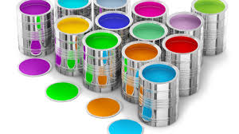
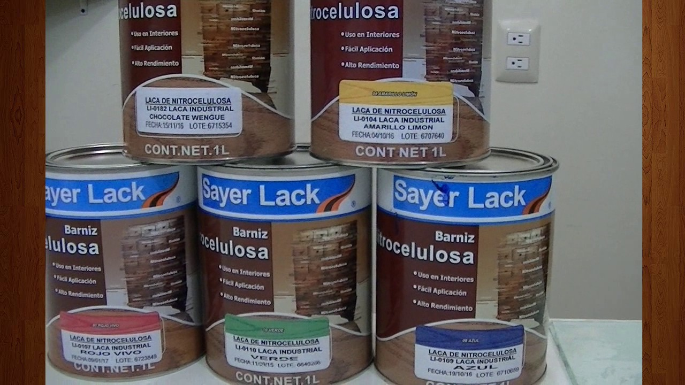
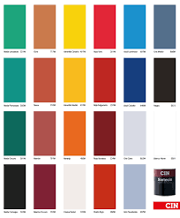
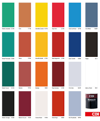

Pinturas
inicio
lacas
A la hora de dar un acabado a un mueble de madera o a cualquier otro elemento es frecuente hacer referencia a un conjunto
de productos de manera confusa cuando en realidad son productos diferentes con diferentes propiedades y que pueden no ser adecuados
para todos los usos. Algunos de estos son las pinturas a base de resinas de poliuretano, el shellac o goma laca, el barniz y la laca propiamente dicha.

carpinteria metalica
Carpintería metálica sin pintura y en buen estado
En el caso de carpintería metálica como hierro o aluminio, primero quita grasas o aceites adheridos,
con un diluyente como el aguarrás. Luego lija con lija 120 retirando impurezas y formando una superficie apta para pintar.
Limpia con una brocha seca y paño para quitar todo resto de polvo. Aplica una mano de antióxido en metales
ferrosos, en el aluminio será necesaria una imprimación para aluminio o una pintura especial para este tipo de metal.
 
